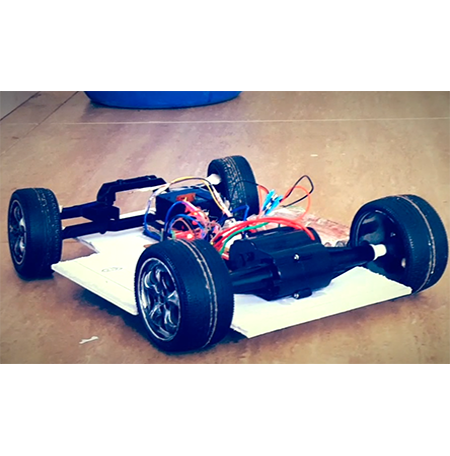

pLAYNavdeesh Ahuja
All Projects
Car Tracer

Car Tracer was a single board device which developed the anti-theft concept of the car. The project was tested on the toy car, which moved randomly. The device took the readings of the movement, and finally send it to the owner of the car via SMS. The device was built with Adruino UNO and GSM module of Adruino.